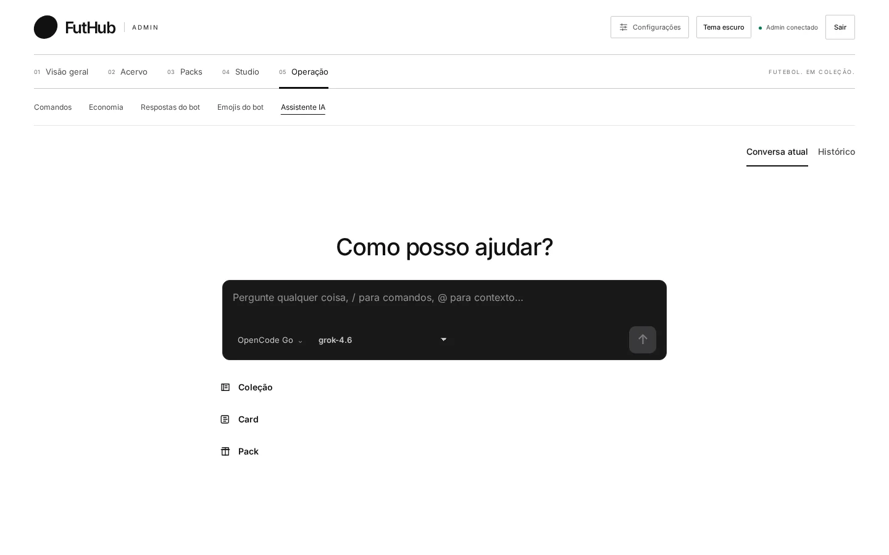
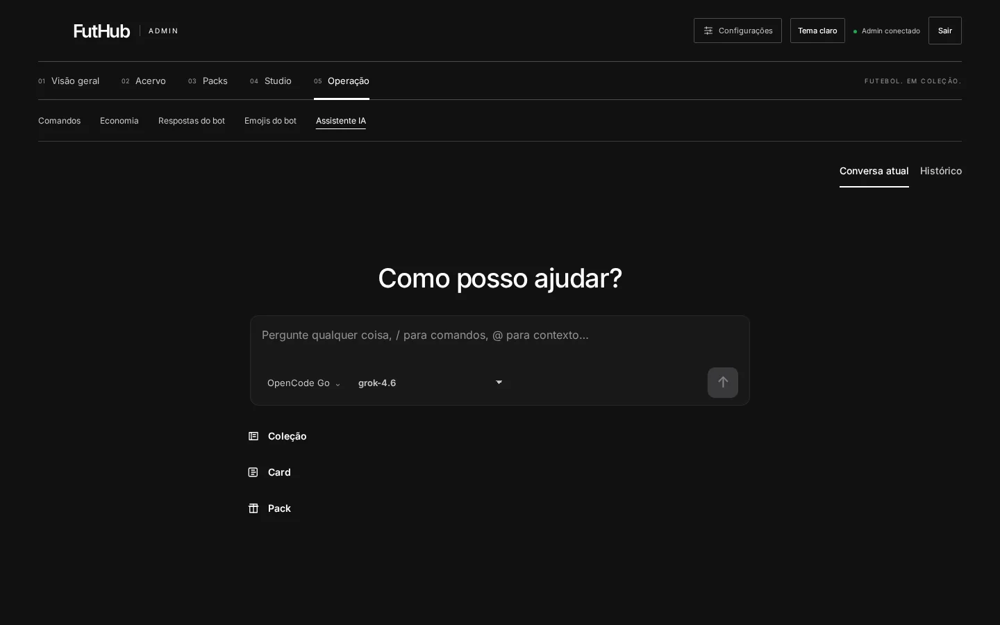

Início / Recursos / Assistente IA
07 · Assistente IA
Você pede, ele propõe, você aprova.
Um chat que conhece o catálogo. Ele busca times, coleções, cards e packs, consulta o elenco real de um clube e pesquisa na web citando as fontes. Quando é para criar algo, mostra uma proposta e espera a sua confirmação.


/ para comandos e @ para contexto.Como funciona
Nada é criado sem um clique seu.
Consultas rodam direto: buscar times, coleções e cards, listar packs, consultar o elenco real de um clube no TheSportsDB e pesquisar na web com fontes citadas.
Criações (time, coleção, card ou pack) viram um cartão de revisão. Ele mostra cada campo, os parâmetros exatos em JSON e os botões Confirmar criação e Rejeitar. Se os parâmetros estiverem incompletos, não dá para confirmar.
search_teams · search_collections ✓
Criar card
Aguardando aprovação- Nome (name)
- Manuel Neuer
- Posição (position)
- GOL
- OVR (overall)
- 87
- ID do time (teamId)
- bayern-munich
- ID da coleção (collectionId)
- lendas
Parâmetros exatos (JSON)
Ilustração do cartão de revisão com os rótulos reais do componente e dados de exemplo
Use o seu modelo
Compatível com OpenAI, OpenCode Go ou compatível com Anthropic. Você escolhe o modelo no próprio chat.
A chave fica no servidor
A API key é cifrada no servidor e nunca volta para o navegador. Só são aceitas URLs HTTPS públicas.
Conversas salvas
O histórico guarda as conversas no servidor, sem chaves, em modo somente leitura. Propostas antigas não podem ser executadas de lá.